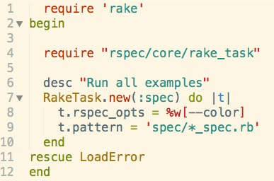

Background
So I had a tough time yesterday and today trying to deploy my very first app to heroku. After talking to a coach and re-reading a heroku page, I was able to figure out why my app wasn't deploying.
Postgres Databases
The problem was that I created postgres databases locally but I didn't create them on my heroku remote. The way I solved this was by changing my Rakefile to have a rescue block as so:
Then I had to run the following commands on my console to generate my database on heroku:
heroku run rake db:create
heroku run rake db:migrate
heroku run rake db:seed